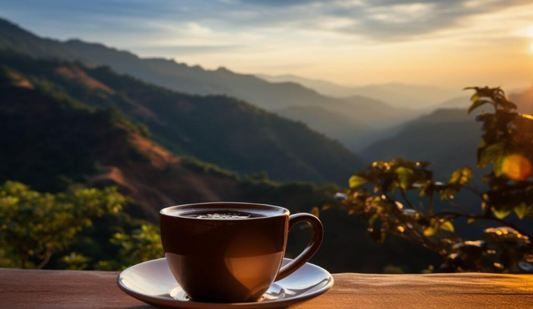
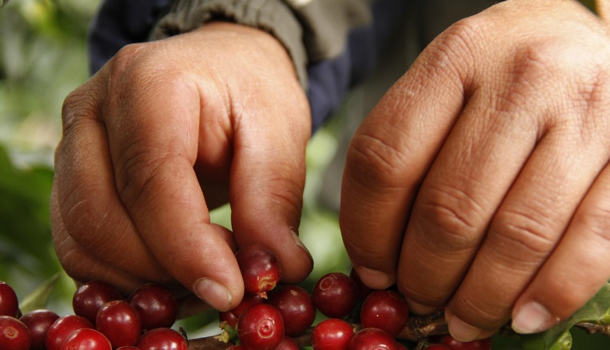

Sobre nuestro café
El café orgánico de nuestra vereda es cultivado sin químicos, con procesos sostenibles que respetan la tierra.



El café orgánico de nuestra vereda es cultivado sin químicos, con procesos sostenibles que respetan la tierra.

